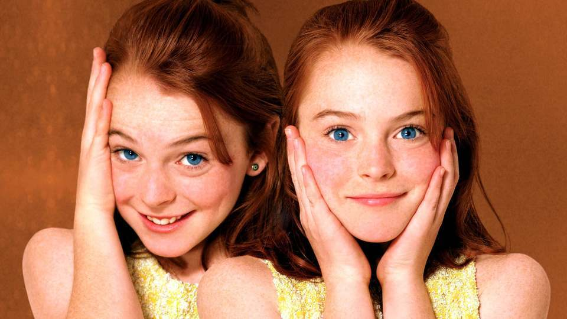
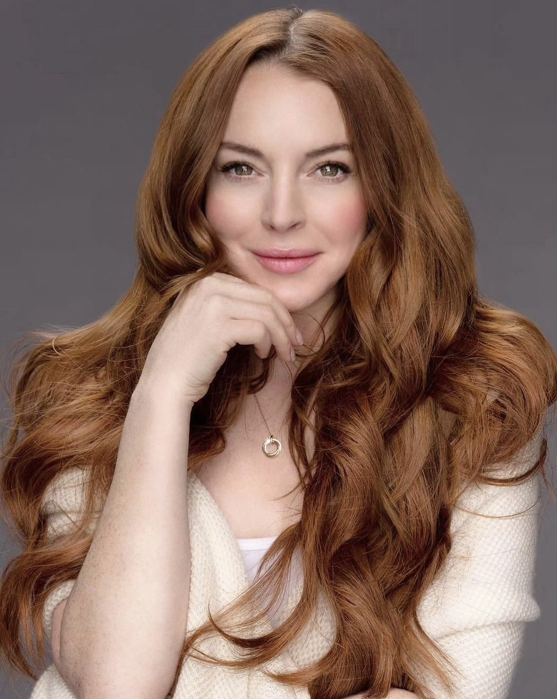
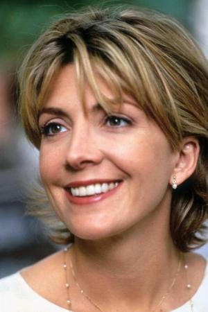
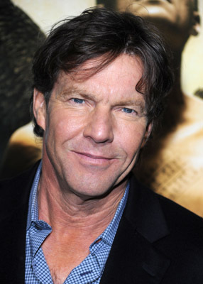
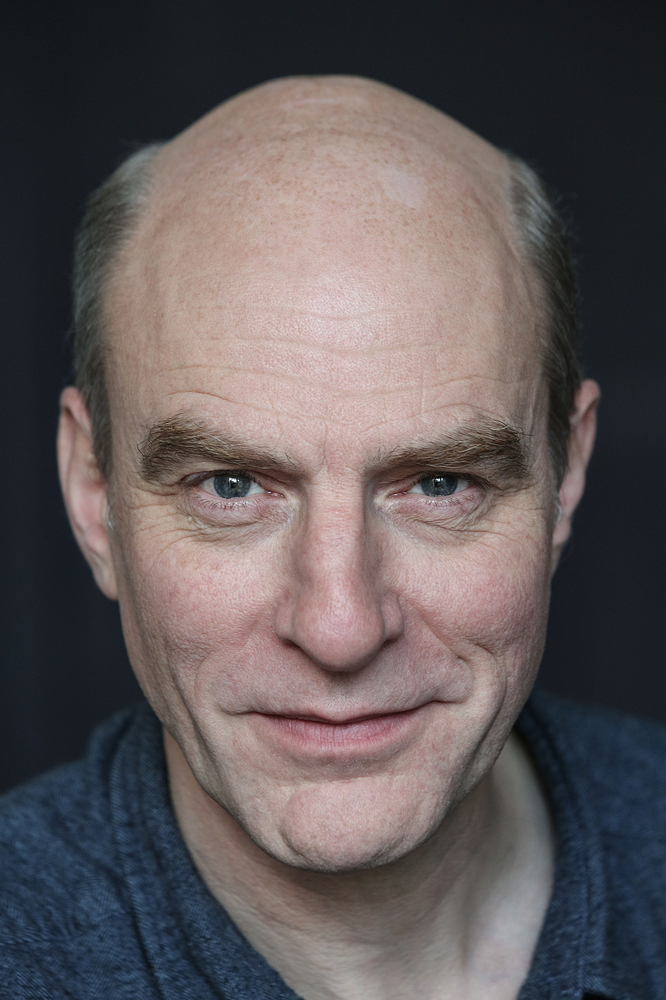
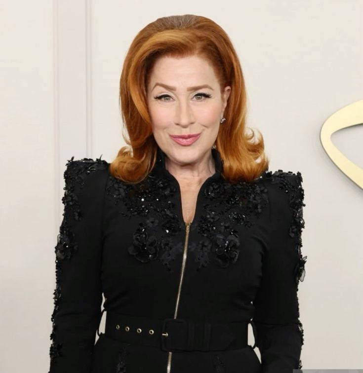
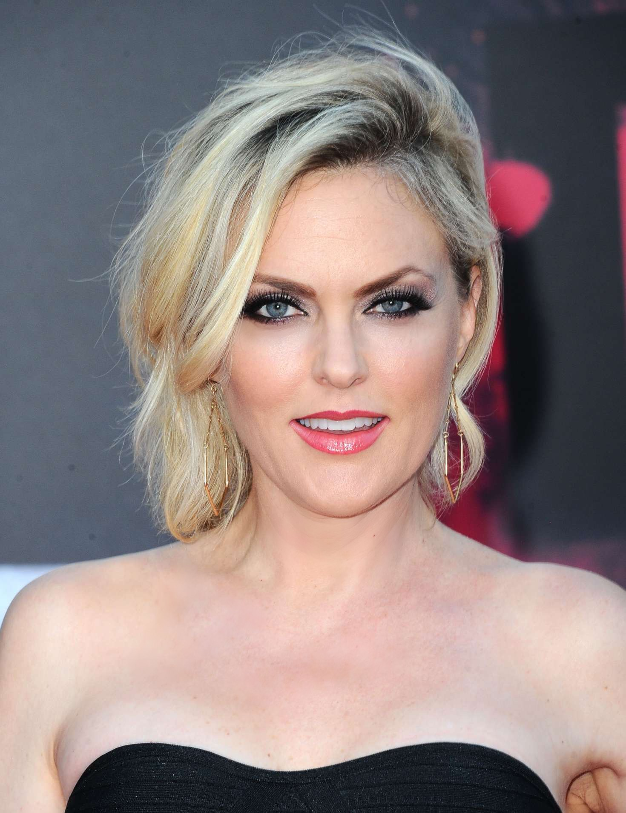

LA PELICULA
Juego de gemelas es una pelicula de disney muy entretenida que salio en 1998. trata sobre dos gemelas que fueron separadas al nacer y que a sus 13 años se reencuentran en un campamento femenino y deciden cambiar de luagres para conocer a sus padres y juntarlos de nuevo. pero hay un problema que no tenian previsto, la nueva novia de su padre; asi que deben hacer hasta lo imposible para romper su compromiso.
Datos curiosos
- La actriz Lindsay Lohan tuvo que filmar dos veces cada escena para poder interprentar a las dos gemelas. ya que ella tenioa el papel de Annie parker y Hallie .
- Despues de filmar la primera toma, Lindsay Lohan se ponia un audifono para escuchar el dialogo que grabo anteriormente como la otra gemela.
- En la escena en la que la lagartija esta en la cabeza de meredith utilizaron una lartija real, una de juguete y una de CGI para distintas tomas.
- Tres años despues de filmar la pelicula, Lisa Ann Walter (chessy) tuvo a niños gemelos identicos que nacieron el 11 de octubre, el mismo dia que las gemelas de la pelicula.
- Fueron Simon (martin) y Lindsay (Annie y Hallie) quienes se les ocurrio el iconico saludo que sus personajes hacen en la pelicula.
- La historia tuvo mas de 20 adaptaciones, tanto como peliculas y series de television.
- Scarlett Johansson, Michelle Trachtenberg (conocida por su participación como la hermana menor de Buffy en la serie de televisión Buffy la casavampiros), Mara Wilson (quien protagonizó Matilda en 1996) y Jena Malone (quien interpretó a Johanna Mason en la saga de Los juegos del hambre). fueron algunas de las chicas que audicionaron para el papel que al final lo obtuvo Lindsay Lohan.
- El niño perdido que aparece en el campamento exclusivo para niñas es interpretado por Michael Lohan, el hermano menor en la vida real de nuestra protagonista.
- Hay una escena eliminada de la pelicula donde Hallie fingiendo ser Annie llega a londres y le pide a martin que se estacionen para ver el castillo de la reina, en eso la reina isabell II saluda a Annie.
- Esta pelicula es un remake, Ya que la original salio en 1961 (The Parent Trap, 1961). En esta primera versión, las 2 gemelas son interpretadas por la actriz Hayley Mills, quién obtuvo por esa interpretación una nominación al Globo de Oro y dos nominaciones a los Premios Golden Laurel.
Reparto
Lindsay Lohan, es una actriz, cantante y compositora estadounidense. Nacida en la ciudad de Nueva York y criada en Long Island, Lohan comenzó su carrera como modelo infantil después de haber sido contratada por la agencia Ford Models a la edad de tres años.Sus peliculas mas reconocidas son Juego de gemelas, un viernes de locos y mean girls.
Natasha Jane Richardson fue una actriz británica de cine, teatro y televisión, ganadora de un Premio Tony. Fallecimiento: 18 de marzo de 2009, Lenox Hill Hospital, Nueva York, Estados Unidos
Dennis William Quaid es un actor estadounidense. Es conocido por sus papeles protagónicos en cine y televisión. El periódico británico The Guardian lo nombró uno de los mejores actores que nunca recibió una nominación al Premio de la Academia.
Simon Kunz es un actor británico conocido por sus papeles en obras teatrales y en la película de Disney Channel The Parent Trap.
Lisa Ann Walter es una actriz, comediante, escritora y productora de películas estadounidense. Ha aparecido en algunas películas como la versión del año 1998 de la película The Parent Trap, así como en Bruce Almighty, Shall We Dance? y La guerra de los mundos en el papel de Cheryl.
Katherine Elaine Hendrix es una actriz estadounidense. Es conocida por sus papeles e interpretaciones en películas como The Parent Trap, Romy and Michele's High School Reunion, Superstar, Inspector Gadget 2 y el documental ¿¡Y tú qué sabes!?.